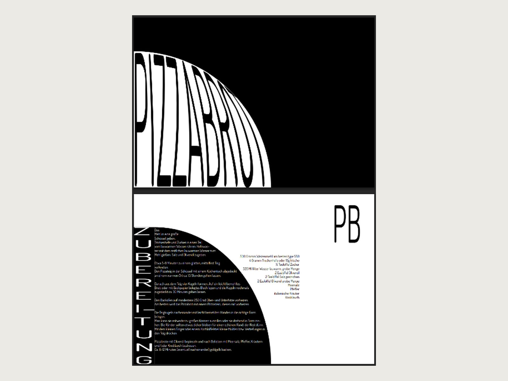
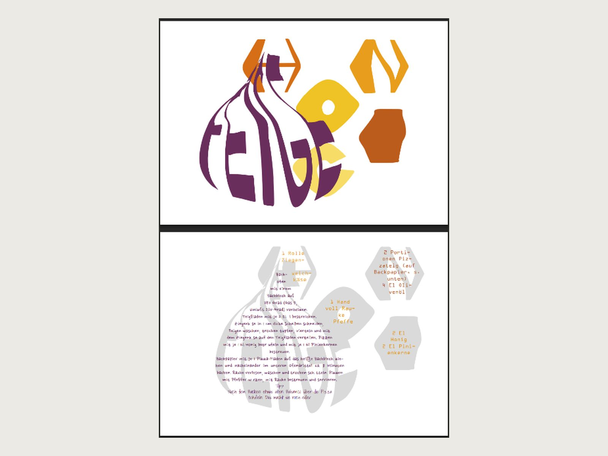

Sieben Sorten Pizza
Rezeptkarten, auf denen die Schrift die Hauptrolle spielt – und das Rezept die Form vorgibt.
- Jahr
- 2025
- Kontext
- Studienprojekt, Kurs Typografie
- Rolle
- Konzept, Typografie, Satz
- Werkzeuge
- InDesign, Illustrator

Ausgangslage
Eine Kursabgabe in Typografie, Wintersemester 2024/25. Die Aufgabe war offen gestellt: ein Set gestalteter Karten, an dem sich Schriftmischung und Satz zeigen lassen. Der Inhalt war frei wählbar – und genau darin lag die erste Entscheidung.
Meine Aufgabe
Sieben Rezeptkarten, die als Serie funktionieren und einzeln bestehen. Der Anspruch, den ich mir gesetzt habe: Die Schrift soll nicht nur Träger des Inhalts sein, sondern selbst die Hauptrolle übernehmen.
Vorgehen
Pizza als Inhalt, weil das Rezept kurz ist. Ich habe bewusst Rezepte mit wenigen Zutaten und knappen Arbeitsschritten gesucht. Bei einem langen Rezept diktiert die Textmenge das Layout; bei einem kurzen bleibt Raum, mit dem Satz selbst zu arbeiten. Die Alternative wären komplexere Gerichte gewesen – die hätten mehr Fläche gebraucht und die Karten in Richtung reiner Textwüste gedrängt.
Der Text nimmt die Form des Gerichts an. Zutaten und Zubereitung sind als Kreis gesetzt, der die Pizza abbildet. Das ist keine Dekoration, sondern eine Ordnungshilfe: Man erkennt schon vor dem Lesen, worum es geht, und die beiden Textsorten – Liste und Fließtext – trennen sich optisch, ohne dass ich eine Linie dafür brauche.
Jede Karte bekommt eine eigene Display-Behandlung. „Prosciutto" läuft im Kreisbogen um den Bildrand, „Pizzabrot" steht als stark verbreitete Groteske über dem halben Format, „Feige" ist aus geometrischen Buchstabenkörpern aufgebaut. Zusammengehalten wird die Serie durch ein gleichbleibendes Raster: oben Farbfeld mit Titel, unten der gesetzte Rezeptteil.
Umsetzung
Gesetzt in InDesign, die freien Buchstabenformen und Pfadeffekte in Illustrator. Am aufwendigsten war der Umbruch in der Kreisform: Jede Zeile musste einzeln nachgezogen werden, damit die Silhouette stimmt und der Text trotzdem noch lesbar bleibt.
Ergebnis
Sieben Karten, die als Set erkennbar sind, ohne sich zu wiederholen. Wer sie nebeneinanderlegt, sieht dieselbe Struktur – und trotzdem sieben verschiedene typografische Ideen.
Was ich mitgenommen habe
Die Formentscheidung war schneller getroffen als die Inhaltsentscheidung. Dass ich mich für kurze Rezepte entschieden habe, hat die Gestaltung überhaupt erst möglich gemacht. Genau das war rückblickend die eigentliche Gestaltungsentscheidung – und sie sah zunächst gar nicht danach aus.

